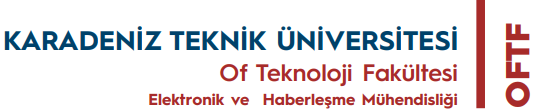

Yapay Zeka Destekli Akıllı Güvenlik sistemi
Yüz Tanıma ve IoT Tabanlı Erişim Kontrolü
Karadeniz Teknik Üniversitesi • Elektronik ve Haberleşme Mühendisliği • 2025
🎯 Problem ve Amaç
Problem: Geleneksel güvenlik sistemlerinin yetersizlikleri.
Amaç: AI destekli çok katmanlı güvenlik sistemi.
Hedefler:
- %99+ doğruluk oranı sağlamak
- Gerçek zamanlı işlem yapabilmek
- Çok faktörlü doğrulama sistemi
- IoT cihazları ile entegrasyon
- Kullanıcı dostu arayüz tasarımı
🛡️ Güvenlik Özellikleri
Çok Faktörlü Doğrulama:
- 1. Katman: Biyometrik yüz tanıma
- 2. Katman: OTP kod doğrulama
- 3. Katman: Zaman tabanlı erişim
- 4. Katman: Grup yetkilendirme
Güvenlik Önlemleri:
- End-to-end şifreli veri iletimi
- Otomatik oturum zaman aşımı
- Başarısız deneme limiti
- Anti-spoofing koruma
- Gerçek zamanlı güvenlik logları
Kullanıcı Grupları:
- Grup 1: Yönetici erişimi
- Grup 2: Çalışan yetkisi
- Grup 3: Misafir erişim
⚙️ Teknolojiler
Python 3.8+
Ana Platform
OpenCV
Görüntü İşleme
Face Recognition
Yüz Tanıma API
Telegram API
Bot Entegrasyonu
Arduino Uno
Donanım Kontrolü
Tkinter GUI
Kullanıcı Arayüzü
Donanım Bileşenleri:
- USB Kamera (1080p çözünürlük)
- Arduino Uno R3 mikrodenetleyici
- Servo Motor SG90 (180° hareket)
- Breadboard ve bağlantı kabloları
📊 Detaylı Sistem Akış Diyagramı
BAŞLAT
Sistem başlatma
↓
GÖRÜNTÜ AL
Video yakalama
↓
YÜZ TESPİT
HOG algoritması
↓
YÜZ KONTROL
Yüz tespit edildi mi?
→
KODLAMA
128-boyutlu kodlama
→
KARŞILAŞTIR
Veritabanı kontrolü
↓
KİMLİK KONTROL
%80 eşik değeri
→
OTP GÖNDER
Telegram bot ile
→
KOD KONTROL
Kullanıcı girişi
↓
OTP KONTROL
Kod doğru mu?
→
ERİŞİM İZNİ
Arduino kontrolü
→
KAPI AÇ
Başarılı giriş
🏗️ Sistem Mimarisi ve Bileşenler
Görüntü Katmanı
OpenCV ile görüntü yakalama ve ön işleme
AI İşleme Katmanı
Yüz tanıma ve kimlik doğrulama
İletişim Katmanı
Telegram API ve OTP sistemi
Kontrol Katmanı
Arduino donanım kontrolü
📊 Test Sonuçları
Doğruluk Oranı
98.7%
Yüz tanıma başarısı
İşlem Hızı
1.2s
Ortalama yanıt süresi
Test Sonuçları:
- 500+ test görüntüsü analizi
- Değişken ışık koşulları testleri
- 50 farklı kullanıcı doğrulaması
- Güvenlik penetrasyon testleri
- Performans optimizasyonu
🎯 Sonuç ve Değerlendirme
Başarılan Hedefler:
- Yüksek doğruluk oranı (%98.7)
- Gerçek zamanlı işlem
- Güvenli çok faktörlü doğrulama
- Kullanıcı dostu arayüz
- Modüler yapı
Teknik Zorluklar:
- Değişken ışık koşulları
- Donanım-yazılım senkronizasyonu
- Ağ bağlantı stabilitesi
- Gerçek zamanlı optimizasyon
Geliştirilen Çözümler:
- Adaptif histogram eşitleme
- Multi-threading yapı
- Hata yakalama mekanizması
- Performans optimizasyonu
📚 Kaynaklar ve Teşekkürler
Akademik Kaynaklar:
- Viola-Jones Face Detection
- HOG Feature Extraction
- CNN-based Face Recognition
- OpenCV Computer Vision
- Telegram Bot API
- Arduino Programming
Referans Yayınlar:
- IEEE Face Recognition Standards
- Computer Vision Research
- IoT Security Best Practices
- Biometric Authentication
- Machine Learning Applications
Teşekkürler:
- Proje Danışman Öğretim Üyesi
- KTÜ Elektronik ve Haberleşme Mühendisliği
- Laboratuvar Teknisyenleri
- Test gönüllü kullanıcıları
- Teknik destek ekibi